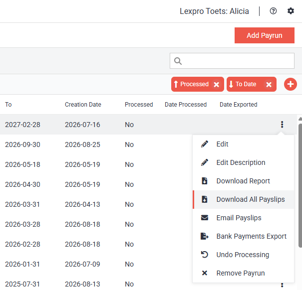
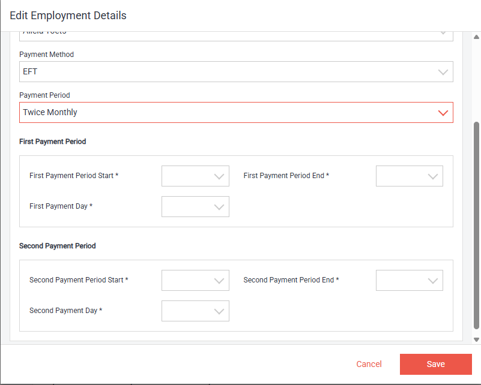
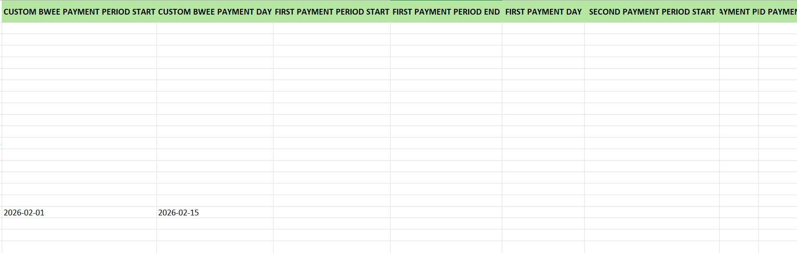
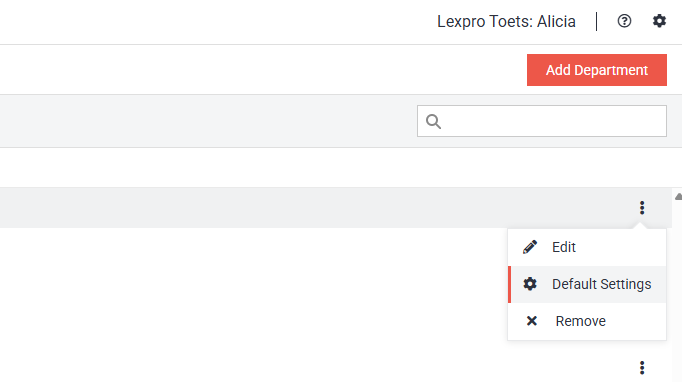
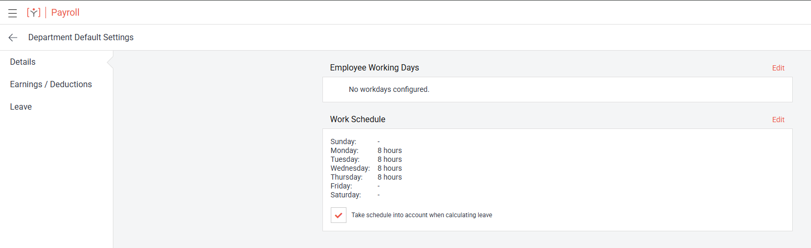
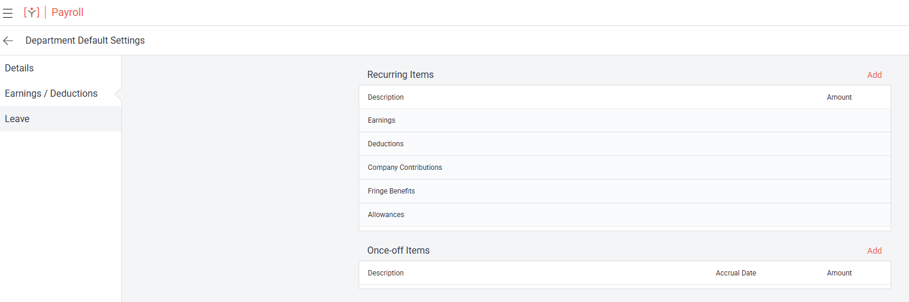
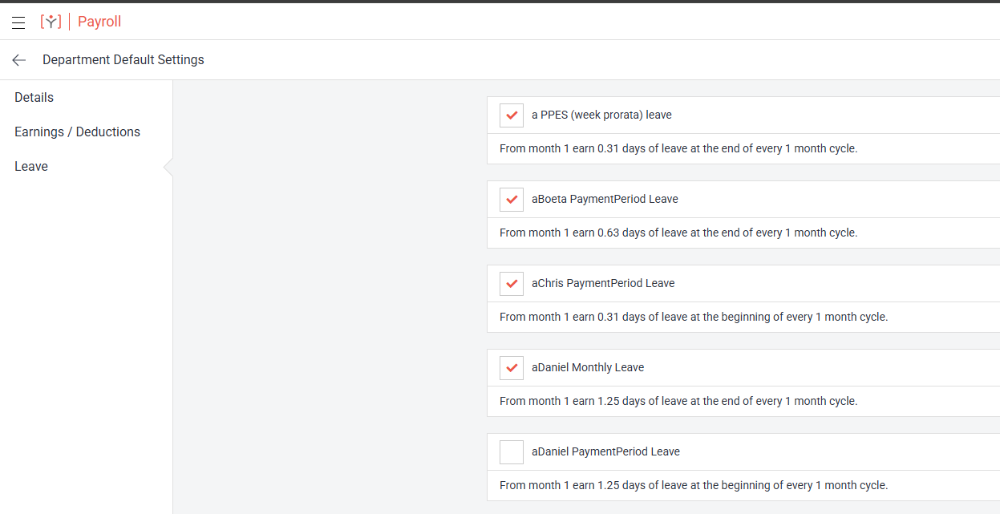

A new 'Download All Payslips' option is available from a payrun's menu. It downloads the payslips belonging to the selected payrun as one combined PDF document.

Download All Payslips.
Custom Biweekly and Twice Monthly payment period options have been added to the Employee Details page and the Add Employee wizard. These options allow an existing employee's payment period configuration to be reviewed and updated, or configured when a new employee is added.

Twice Monthly payment period options on Employee Details.
The Employee Details CSV and Excel exports now include custom biweekly payment period fields and twice monthly payment period fields. For biweekly employees, the export uses the custom payment period end date and payment day when configured; otherwise it uses the standard biweekly values.

Employee Details payment period columns.
Department Default Settings can be accessed from the Departments page by opening the selected department's menu and choosing 'Default Settings'.

Accessing Default Settings from the Departments page.
The Department Default Settings page provides three individual options:

Department Details defaults.

Department Earnings / Deductions defaults.

Department Leave subscriptions and rule descriptions.